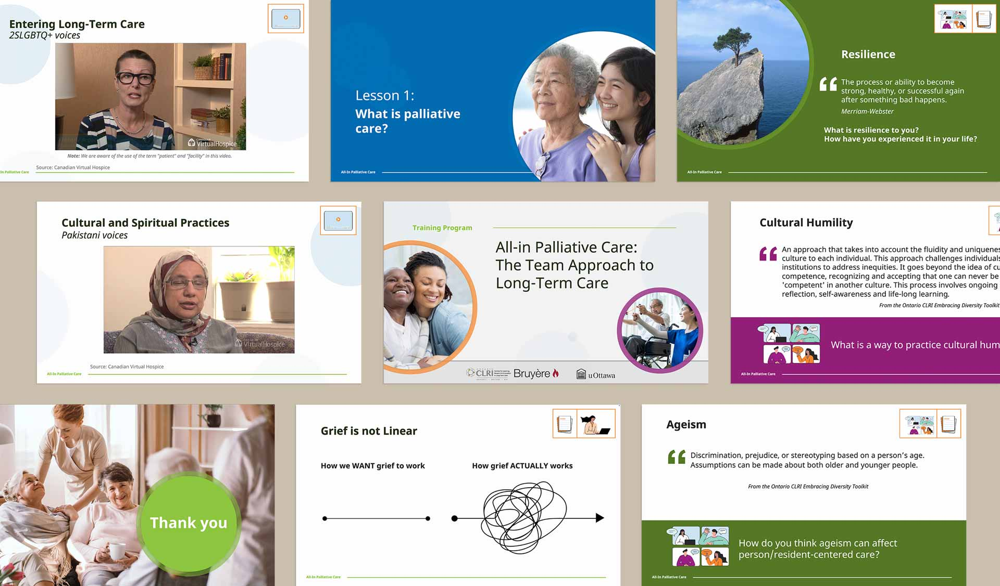
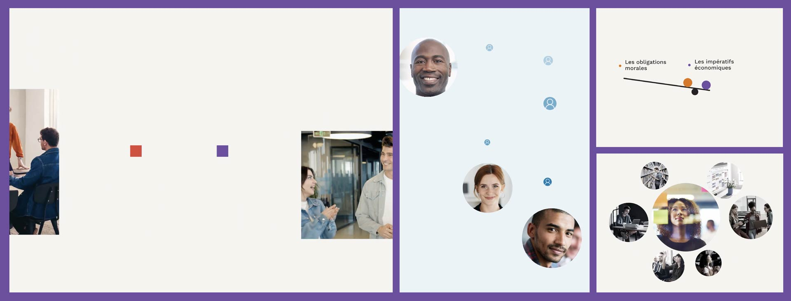
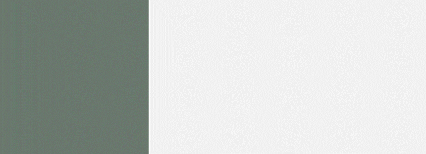

Motion graphics, logo animation, and instructional video production for the University of Ottawa's Teaching and Learning Support Service — built for clarity, accessibility, and thousands of learners across faculties.

During my time at the University of Ottawa, I worked across a wide spectrum of motion and multimedia needs — from brand identity systems to instructional video modules viewed by thousands of learners. The work required balancing creative exploration with clear brand standards, accessibility requirements, and pedagogical goals.
Across departments, I collaborated with subject-matter experts, faculty leads, and development teams to translate complex information into engaging, purposeful visuals. Each project had a different audience, a different tone, and a different set of constraints — which made the work genuinely varied and consistently demanding.

I designed the bilingual visual identity for the Supra-Institutional Learning Communities (SILC) initiative — a logo system that functions clearly in both French and English contexts. The mark reflects how the program connects learners across faculties and institutions: structured, collaborative, and cross-disciplinary. The final identity is accessible and ready for use across digital and print communications.
A set of smooth, brand-aligned slide transitions for the Executive MHA program's video and presentation materials. Working within the visual identity designed by Gisèle Richard, the animations are professional, modern, and seamless — elevating pacing across long-form instructional content.
Clean, bilingual text and lower-third animations for the French MBA program, aligned to the visual identity designed by Gisèle Richard. The motion system emphasizes precision, clarity, and rhythm — supporting interviews and promotional content, and providing a visual language that scales across future communications.
A suite of styleframes establishing the visual direction for a series of academic and promotional videos for the Maîtrise en administration des affaires program. The styleframes explored composition, colour, and motion cues that balanced faculty branding with a more contemporary, human-centred feel — guiding the animation approach and ensuring visual consistency across all program assets.
A refined end-title animation for the Maîtrise ès arts en lettres françaises program. The motion is clean, understated, and typography-driven — designed to close videos with clarity and unify program assets with a consistent visual signature.

A cohesive motion graphics suite including animated titles, lower thirds, and visual transitions — elegant, academic, and distinctly bilingual. The system scales across interviews, promotional videos, and instructional content.
A comprehensive, brand-aligned PowerPoint template for Ontario CLRI at Bruyère Health, supporting teaching, outreach, and long-term care training initiatives. The deck brings together accessible layouts, cohesive typography, and flexible content structures that accommodate both clinical information and narrative storytelling — standardizing presentations across the organization for diverse audiences.
Working across the University of Ottawa sharpened skills I rely on constantly: designing within systems I didn't create, working within brand constraints set by other designers, and prioritizing the needs of learners who have limited time and high stakes.
The most challenging and rewarding work was finding the space to bring genuine visual quality to institutional constraints — making something that feels considered and human within a system that tends toward the generic.